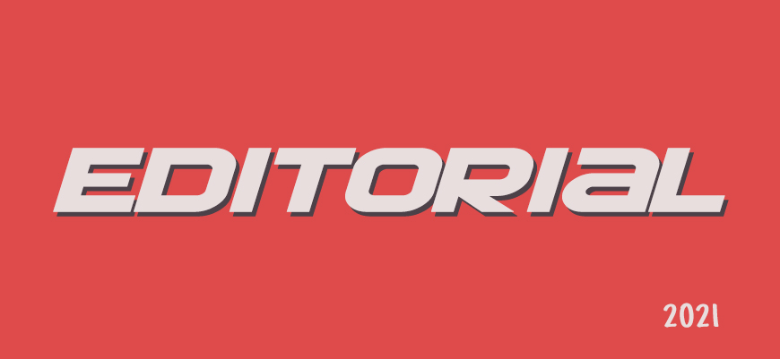
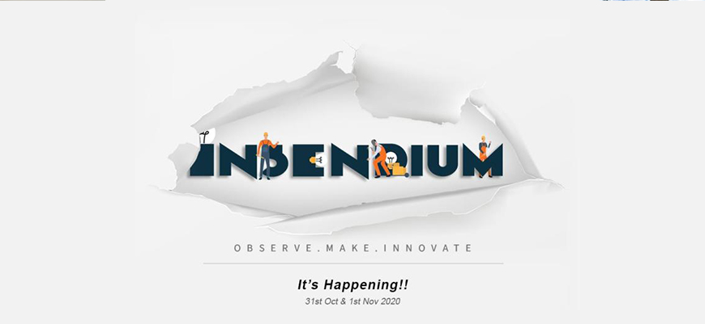
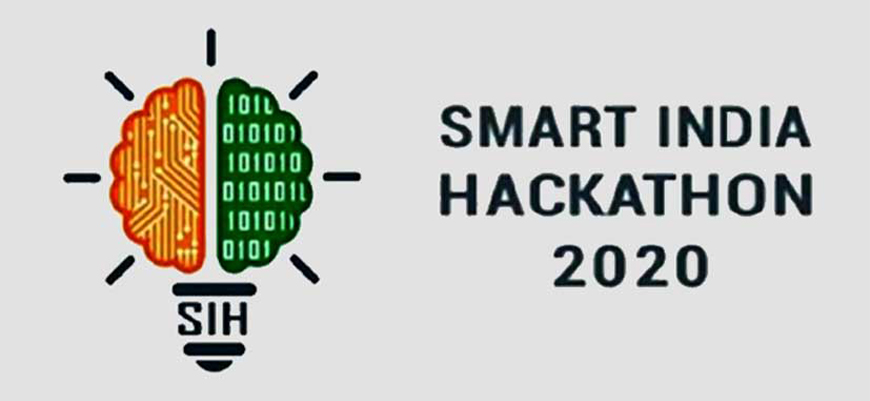

-
28 April 2021
Editorial 2021
2020 has been a rough ride. With the unanticipated spread of the Coronavirus Pandemic, life as we knew it almost ceased to exist. On one side, everything from education to pharmacies and clinics went online. Even the pert generation took to technology to reconnect with their childhood friends, and their long-lost passions. Working from home and online classes became the new normal. On the other hand, the lockdowns had managed to flatten the curve to an extent. But with the homecoming of expats, the numbers of infected patients continued to rise. The nation-wide lockdowns and travel regulations have also lead to an economical collapse not just in India, but around the globe. When PM Narendra Modi announced the Atmanirbhar Bharat Abhiyaan on the 12th of May this year, he threw light on the importance of promoting local products. The announcement of the Coronavirus pandemic related economic package, worth 10% of India's GDP in FY20, came as a boon to many struggling startups and small businesses across the nation. For India, having the world's third largest startup ecosystem, this was the thread of hope to cling on to. When we consider the startup ecosystem in Kerala, the contributions of the Kerala Startup Mission (KSUM) are phenomenal. With more than 2200 registered startups, over 3 lakh sq. ft. of incubation space, 30+ incubators and over 200 innovation cells, KSUM has built up an extremely successful entrepreneurship culture, especially amongst the youth. It has successfully been bridging the gap between ideators and marketable products, especially among the student community. This is done by providing various funding opportunities and direct contact to investors through various ideathons and other competitions. The KSUM has always encouraged the student community to come up with innovative solutions, especially during the time of crisis. Even during the Covid-19 pandemic, they have welcomed innovative tech solutions that could boost the prevention of the spread of the virus. There have also been a rise in the usage of online delivery platforms like Flipkart, Amazon, Big Basket and Zomato since almost the entire population are confined to their houses. People have been ordering everything from groceries and medicines to plants online. The shutting down of the cinema theatres have led to people using the OTT services line Netflix, Hotstar and Amazon Prime and online payment platforms like Google Pay, PhonePe and Paytm now, more than ever. Platforms like Google meet, Zoom and Google classroom have seen exponential growth. Considering the startup ecosystem in Kerala, College incubators have come up with many innovative products that could possibly be moulded into successful startups. The edtech and healthtech startups have been growing since the pandemic. Tourism and real estate have suffered tremendously. We have seen a collection of hits and misses over the past few months. Yet, somehow, there is still hope, especially for the Startup community not just in Kerala, but all over the nation.
-
31 Nov 2020
Insendium 2020
Insendium is a two day ignition program conducted by the SJCET Bootcamp. The program is mainly conducted to spark the flames of entrepreneurship and innovation residing in one. Numerous speakers proficient in different fields of engineering shared their experiences, struggles and their methodology for success. Insendium has helped me in having a better understanding of engineering and entrepreneurship. The experiences of the speakers have helped me having a broader insight of the industry. The program is mainly conducted for first year students who has just started their engineering journey. Different fun filled activities and programs were conducted, these activities helped us as freshers, improving teamwork, communication skills, idea pitching and other necessary skills required for their daily lives. Insendium 5.0 can be culminated as a two day fun filled program which helped each of its participants in bringing up the entrepreneur in us to bright daylight.
-
14 Jan 2020
Smart India Hackathon 2020
The internal preliminary round was scheduled at the Maker Space, SJCET. We had to work on our problem statement chosen, perform its solution analysis and complete documentation and PPT preparation to present it to the judges till noon. Our team "Stormers" proposed an app called "SCRAPSPACE" which would help people utilize waste products by the motto of one persons waste is another persons wealth which would reduce pollution and waste accumulation. So we worked on our idea, its possible problems etc. in the forenoon session. In the afternoon session, we presented our idea in front of the judges, Sarju sir and Jojin sir, along with the other team members. A total of 5 teams from 10 were selected for the next round, among which we were one of them.